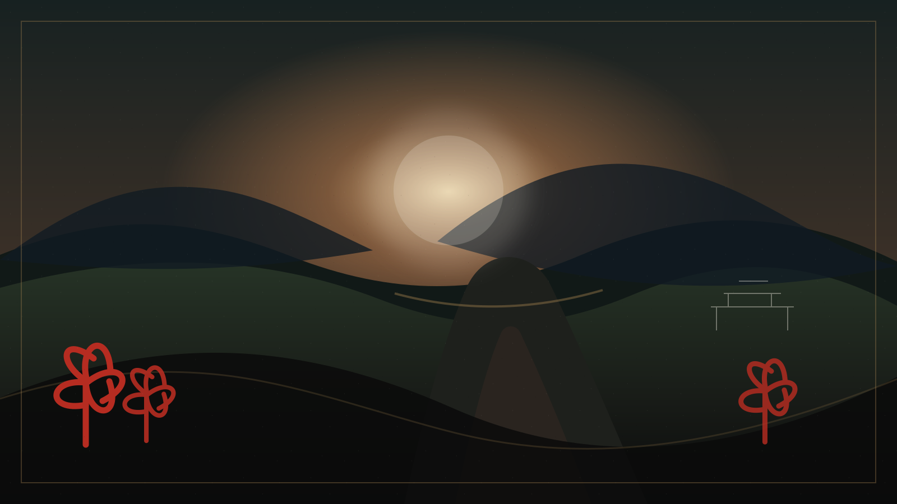

Em setembro, o Japão pode continuar úmido e quente. Mesmo assim, o país começa a falar como se o outono já tivesse chegado.
A mudança aparece primeiro nos detalhes: embalagens com folhas vermelhas, doces de batata-doce, castanha e abóbora, anúncios de pratos sazonais, calendários de feriados e conversas sobre kōyō.
A estação como linguagem
No Japão, as estações não são apenas clima. Elas organizam cardápios, vitrines, viagens, cartões, poemas, festivais e pequenas expectativas sociais.
O intervalo entre corpo e calendário
A loja anuncia outono enquanto a rua ainda parece verão. Essa antecipação prepara o olhar antes que a paisagem termine a mudança.